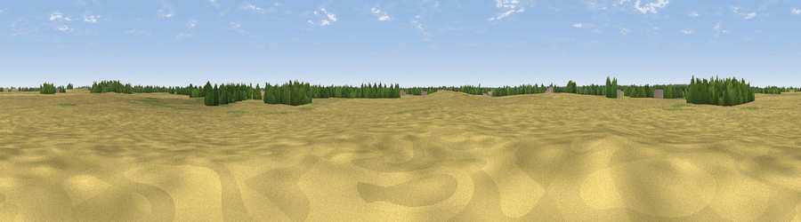

Viewpoint near East Ruston
#45868 in England · top 96% of its area beats it · near East Ruston · path 149 mWhere it is
The exact computed spot (TG 35699 28073). Click the marker for map links.
Public access: the nearest public right of way is about 149 m away — the final stretch may cross private land. Computed from Natural England's CRoW access layer and OpenStreetMap rights of way — not the legal definitive map. Always verify locally.
The view, rendered

A 360° render of this exact spot computed from the terrain model, tree cover and land cover — summer colours, afternoon light, calibrated against photographs of famous viewpoints. Real trees, hedges and buildings will differ in detail.
The panorama
Grey silhouette: terrain skyline in each direction (720 bearings, Earth curvature and refraction included). Dashed green: skyline with trees (+15 m) and buildings (+8 m) as obstacles. Blue strip: how far the ground is visible on each bearing.
Where the view opens
Wedge length = distance to the farthest visible ground on that bearing (vegetation-aware). Rings at 10, 25 and 50 km.
What fills the view
88% cropland · 6% grassland · 5% woodland
Angular shares of the visible panorama (visual magnitude), not map area. Landscape diversity 0.20 (0–1 Shannon).
Key numbers
More beautiful places nearby
The staircase of upgrades: each row has a higher view potential than everything closer. Driving times are estimates from straight-line distance, calibrated against real road routing — check an actual route before setting out.
| Place | Direction | Drive | Score |
|---|---|---|---|
| High Hill | SSW · 1 km | ~2 min | 13.3 |
| Barton Broad Boardwalk | S · 7 km | ~15 min | 17.9 |
| Viewpoint near Paston | NNW · 8 km | ~16 min | 56.1 |
| Viewpoint near Mundesley | NNW · 9 km | ~18 min | 58.9 |
| Viewpoint near Trimingham | NNW · 12 km | ~23 min | 62.4 |
| Viewpoint near Sidestrand | NW · 15 km | ~27 min | 65.3 |
| Viewpoint near Overstrand | NW · 18 km | ~31 min | 67.5 |
| Viewpoint near Weybourne | WNW · 29 km | ~46 min | 68.3 |
52.79868, 1.49491 · source: osm peak · position refined by local search. Computed location — check access rights before visiting.